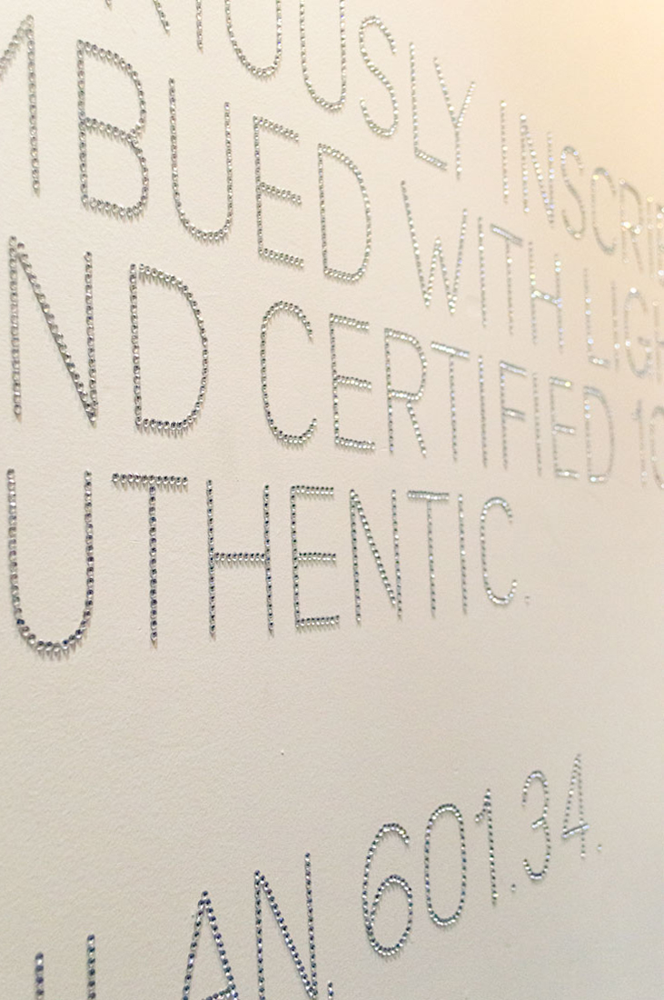
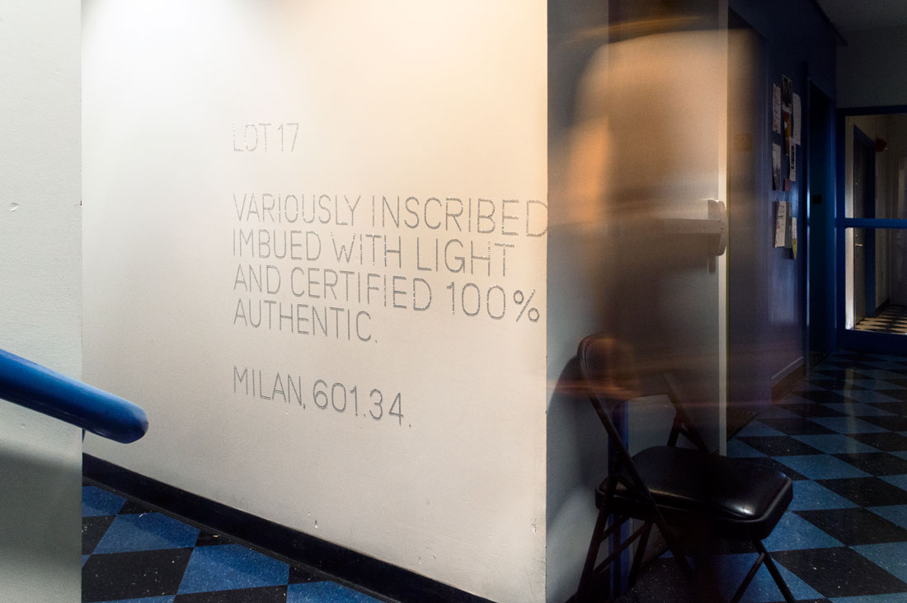

Lot 17
Installation (3,000 rhinestones)
2014
Lot 17 finds its roots in the phenomena of International Art English and the language of Sotheby's auction catalogs. It comments on the dissonance between the culture of art-making in school (the struggling/independent artist) and the commodification of the art object that has reached peak value (the art star) by aping the jargon of an auction lot listing. Flowery, ebullient phrases are made to call out, by contrast, the condition of art-making spaces versus art sale spaces, and the chasm between art's upper echelon—that is, its wealthy buyers—and its makers.


